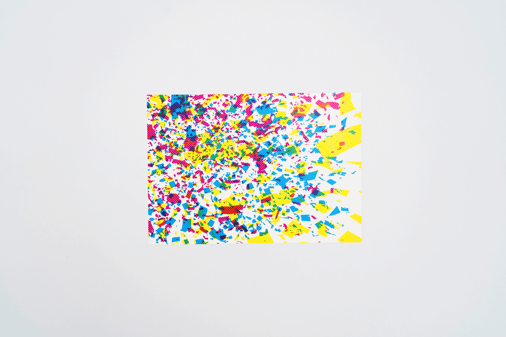
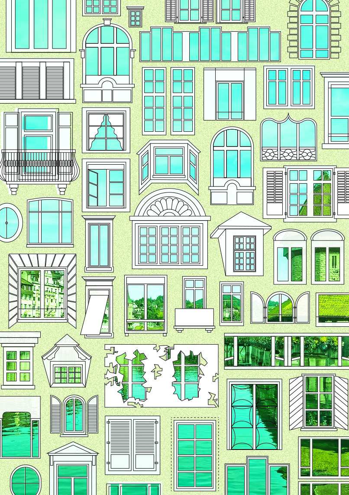

Gruss aus
Luzern
Kann man eine Stadt in Kunst umwandeln? Die Fenster von Luzerner Häusern geben einen Ausblick auf die Stadt. doch die Kapellbrücke zeigt sich nur bei genauem Hinsehen. Der Wagenbachbrunnen trägt einen Kuchen aus Farbe – Schichten aus Punkten und Überlagerungen. Die Fontänen schiessen wie Kerzen aus dem Kuchen heraus. Der Fasnacht-Konfettiregen wird neu interpretiert: Die «Fötzeli» lösen sich in Pixel auf und Druckpunkte tanzen wie Partikel eines Festes.

Entwurf
Projekt
2025
Editorialprojekt